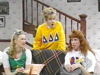
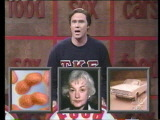

This Auction Includes:
 |
TKE Sweatshirt $32.39 MSRP
This auction is for a lightly used Tau Kappa Epsilon fraternity letter sweatshirt. Blue sweatshirt with red and white lettering. The tag is cut out, but I think it's a poly-cotton blend.
Size: L
Actual measurements* Chest 24": (across armpits) Sleeve Length: 33" (neck center to sleeve tip) *More measurements available upon request
|
Notes on This Auction:
| I feel bad selling this but I never wear it (and
I graduated in 2004). The sweatshirt shows almost no signs of wear.
I would prefer if this was purchase by or for a member of TKE. Please let me know if you have any
questions. The official colors of TKE are "cherry and gray," so you may wonder why this sweatshirt is blue with red and white letters. Well, I was copying a prop piece used on SNL. It's been used at least twice, once in 1992 with Rob Morrow, and more famously in 1997 with Will Ferrell.   Right now I'm trying to sell a lot of items in a short amount of time. Some of my listings might not be as detailed as they normally would be. If you'd like any additional information on this or any of my other listings, please let me know. Thanks for looking! |
Frequently Asked Question (FAQ):
 |
Why is the starting price so low? Bid with confidence! Don't be scared off by a low starting price as a possible sign of inferior goods - I always start my auctions at a low price, without a reserve price or a Buy It Now price. That way my items are sure to sell and I always get (in my view) the full market value for my items. As a result, I will never end an auction early or add a Buy It Now option. Please do not ask me to. |
 |
How soon will the item be shipped? I pride myself on very quick shipping. Generally, I ship on the same day I receive payment, usually within a few hours. Items typically get packed before the auction is over and I live close to the Post Office. Also, please note that if one of my listing offers free shipping, that only applies if the final auction price exceeds the shipping costs. In cases where the final auction price is less than the shipping cost, the winning bidder will be invoiced for the difference. |
|
|
I
personally guarantee your satisfaction! |